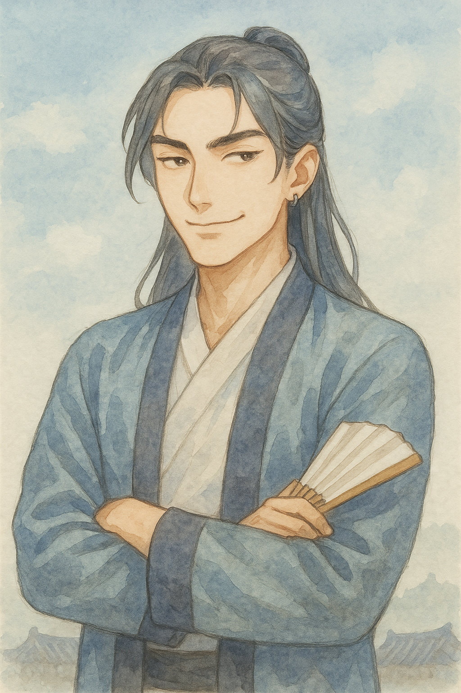
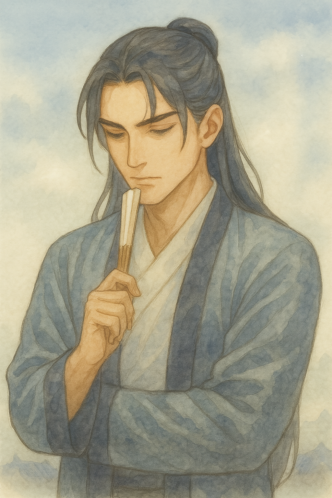
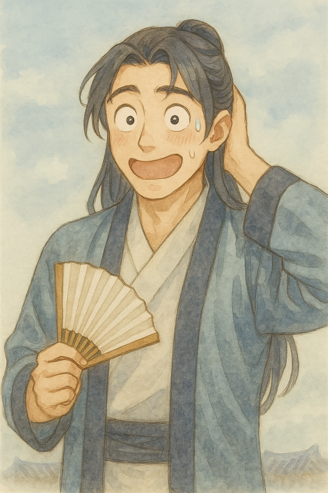
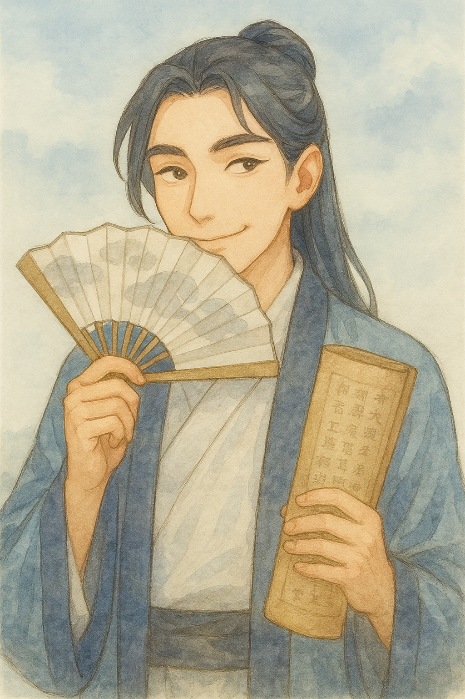
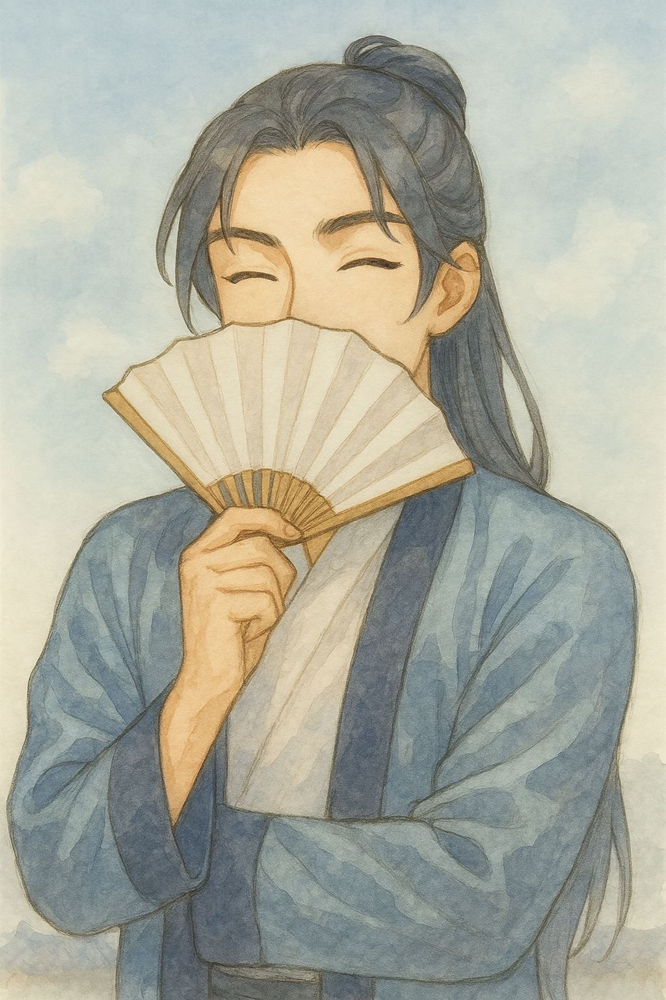

아이샤 수채 톤 계승 · gpt-image-1 생성 · 원본 1024×1536(2:3) — 9:16 사용 시 상하 크롭. 프롬프트 정본 = docs/20260721_141213_남신도사_페르소나_GPT이미지프롬프트_v1.md · 캐릭터 이름(연리와의 관계)은 Q.16 결정 대기.
docs/20260721_141213_남신도사_페르소나_GPT이미지프롬프트_v1.md




